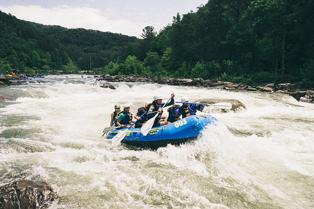
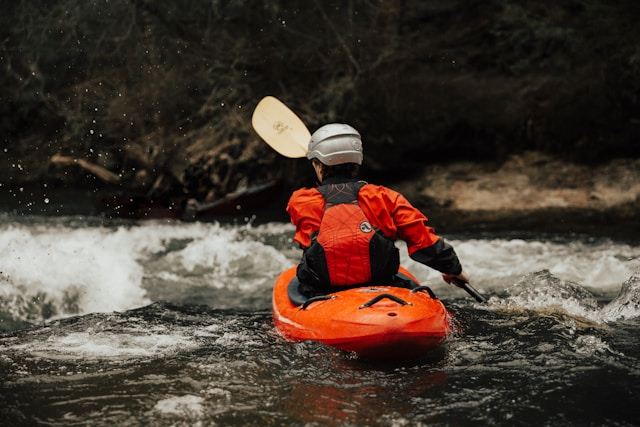
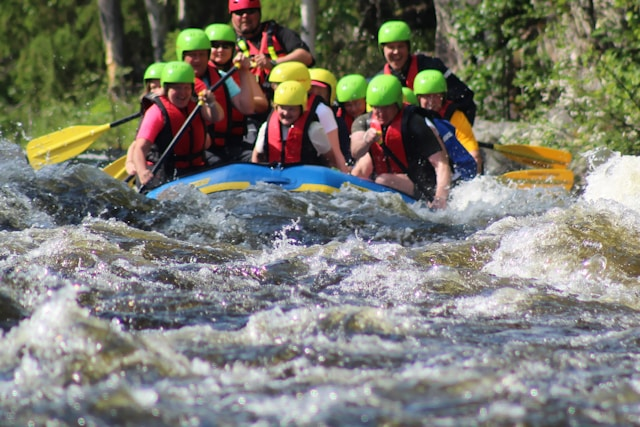
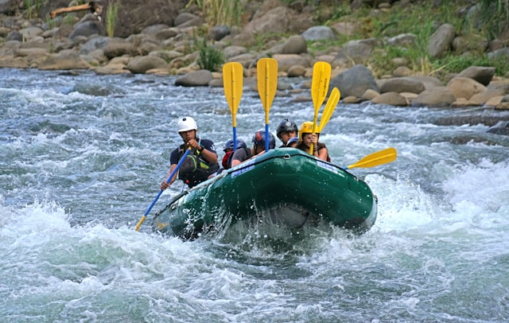
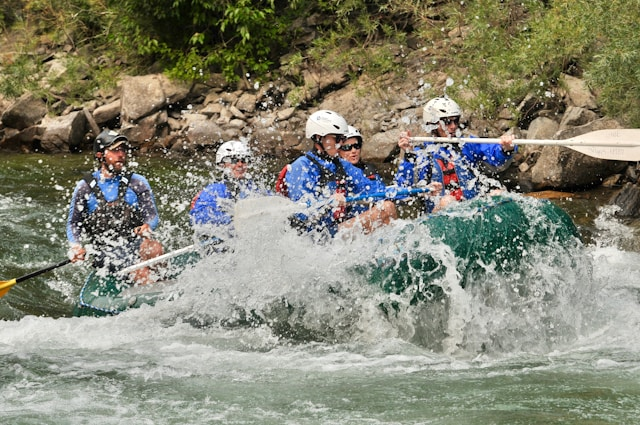
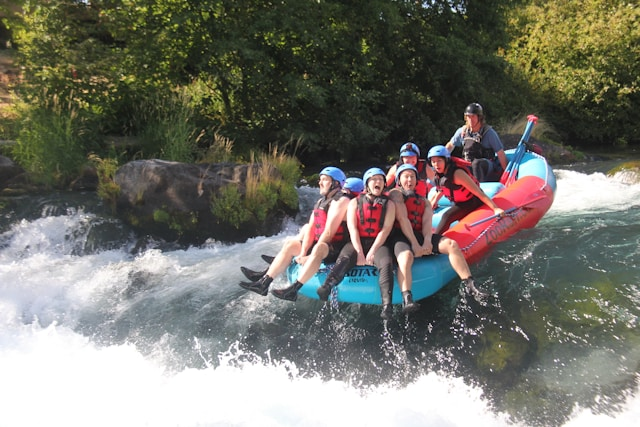

Our mission is to provide unforgettable outdoor experiences that build teamwork, confidence, and appreciation for nature.


Our mission is to provide unforgettable outdoor experiences that build teamwork, confidence, and appreciation for nature.
Founded in 1998 by a group of passionate outdoor enthusiasts, Dry Oak Rafting began with a single raft and a dream — to share the thrill of the river with others. What started as weekend trips with friends quickly grew into a full-service rafting company dedicated to adventure, safety, and unforgettable experiences. In the early years, our founders explored remote river systems, carefully selecting routes that balanced breathtaking scenery with exciting rapids.

By 2005, we had expanded our fleet, hired certified professional guides, and began offering family-friendly trips alongside our advanced whitewater challenges. Over the years, we’ve proudly guided thousands of guests through roaring rapids and scenic waterways. Today, we remain committed to safety, environmental responsibility, and delivering unforgettable river adventures for all skill levels.




